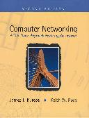
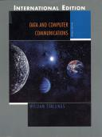

Nigel Smart
ISBN: 0-07-709987-7
Mc Graw - Hill 2003
aanbevolen lectuur
website van het boek website van de auteur
|
Cryptography and Network Security Principles and Practices, 3e William Stallings ISBN: 0-13-111502-2 of 0-13-091429-0 (ingebonden) Prentice Hall - 2003 aanbevolen lectuur website van het boek website van auteur website bij uitgever |
|
|
Cryptography Nigel Smart ISBN: 0-07-709987-7 Mc Graw - Hill 2003 aanbevolen lectuur website van het boek website van de auteur |
|
Computernetwerken, 4e Andrew Tanenbaum ISBN: 0-13-066102-3 (Engels, Prentice Hall) - 2003 ISBN: 90-430-0698-X (Nederlands, Prentice Hall - Pearson Education) - 2003 inhoud van het boek http://www.cs.vu.nl/~ast |
|
Digital Communications: Fundamentals and applications, 2e Bernard Sklar ISBN: 0-13-084788-7 Prentice Hall - 2001 Handboek inhoud van het boek |
|
Data Communications and Networking, 3e Behrouz A. Forouzan ISBN: 0-07-123241-9 McGraw-Hill - 2004 Website van het boek |
|  |
Computer Networking, 2e A Top-Down approach Featuring the Internet James F. Kurose en Keith W. Ross ISBN: 0-201-97699-4 Addison Wesley - Pearson Education - 2003 aanbevolen lectuur website van het boek |
|  |
Data & Computer Communications, 7e William Stallings ISBN: 0-13-183311-1 Prentice Hall - Pearson Education - 2004 leshulpmiddellen |
|
Internet en Intranet Firewall strategieën Amoroso en Sharp ISBN: 90-395-0506-3 Academic Service - 1996 |
|
Virtual Private Networks Dennis Fowler ISBN: 1-55860-575-4 Morgan Kaufmann Publishers - 1999 |